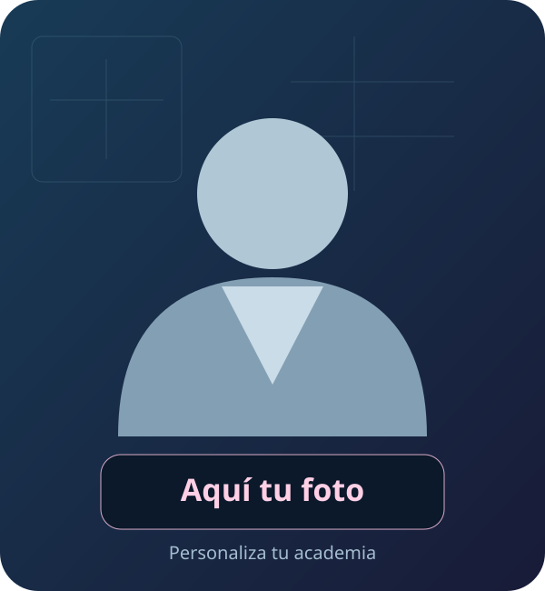

¿Qué hueso contiene la cavidad glenoidea?
Vista de enunciado. Las opciones, soluciones y el modo examen no se incluyen en esta demostración.

RADIOSASAcademy · DemoPlataforma de test personalizableExámenes · Simulacros · Progreso local
Demostración de diseño y funcionesEsta demo muestra la presentación del proyecto. No permite abrir convocatorias, cuadernillos ni simulacros.
La demo no descarga las otras 995 preguntas ni sus respuestas. El banco y la revisión académica de la versión de cada cliente se acuerdan expresamente.
Diseño ilustrativo. No son resultados de alumnos.
Solo puedes leer estos cinco enunciados del proyecto. No hay respuestas, corrección ni examen utilizable. Entrenamiento propio, no oficial; no se presenta como banco académicamente verificado.
Vista de enunciado. Las opciones, soluciones y el modo examen no se incluyen en esta demostración.
Vista de enunciado. Las opciones, soluciones y el modo examen no se incluyen en esta demostración.
Vista de enunciado. Las opciones, soluciones y el modo examen no se incluyen en esta demostración.
Vista de enunciado. Las opciones, soluciones y el modo examen no se incluyen en esta demostración.
Vista de enunciado. Las opciones, soluciones y el modo examen no se incluyen en esta demostración.
La plataforma completa puede registrar notas, errores y sesiones en el navegador. Estos gráficos son una maqueta; esta demo no permite generar intentos ni guarda progreso.
Promoción válida hasta el 31/12/2026. Oferta para adaptar la estructura existente: nombre, colores y una foto propia o avatar genérico. Incluye primer año de dominio, hosting y mantenimiento. Renovación desde el segundo año: 100 €/año.
El aprobado o suspenso es un resultado de práctica según la puntuación; no se garantiza aprobar una oposición. Proyecto independiente, sin afiliación con el SAS.
Solicitar mi academia · 200 € →Solicitud sin cobro. El pago seguro se facilita tras confirmar el alcance. Esta demo no activa servicios ni acceso automático a la plataforma original.